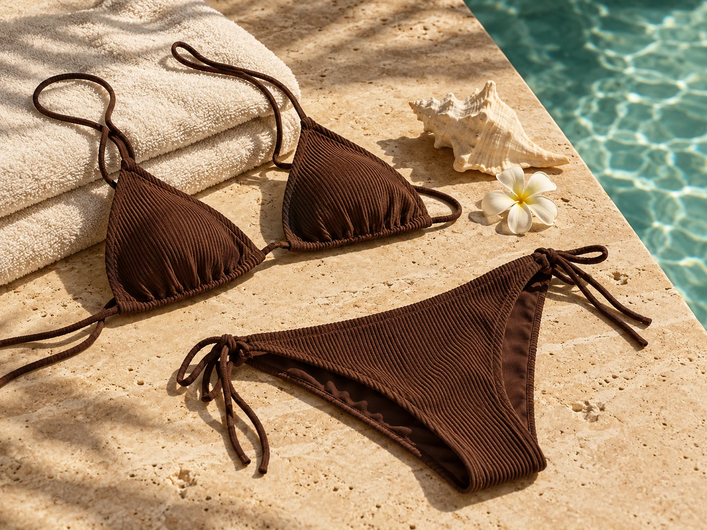
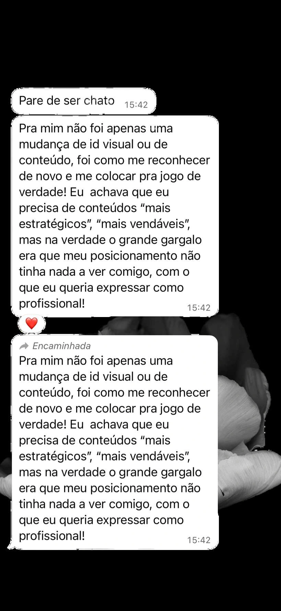
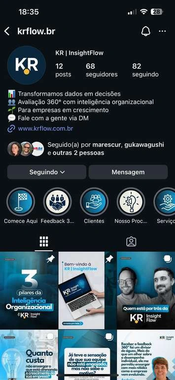
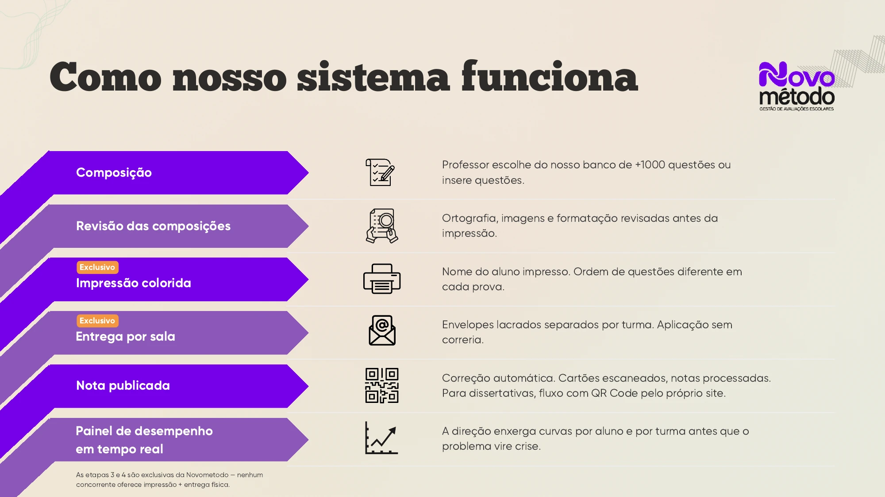
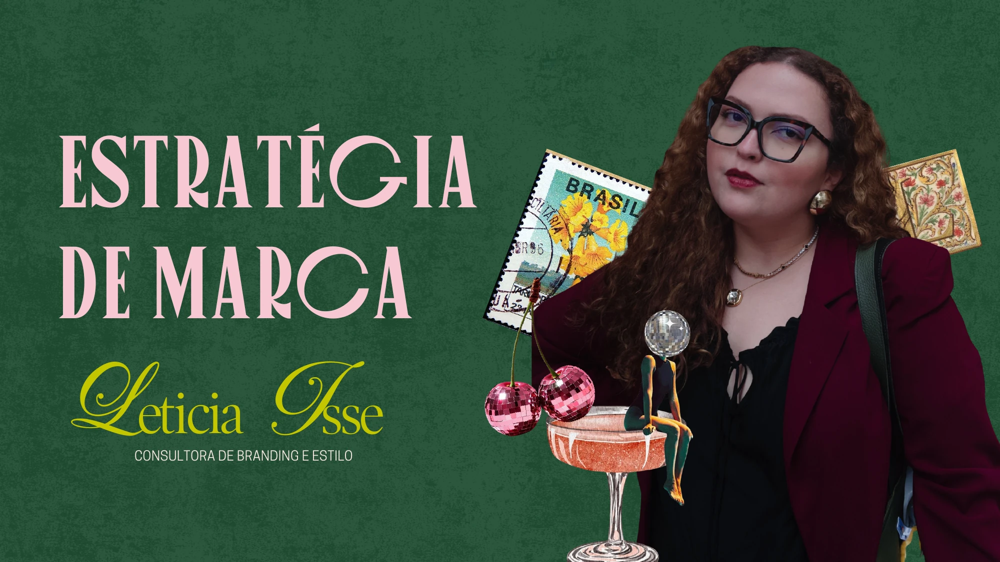
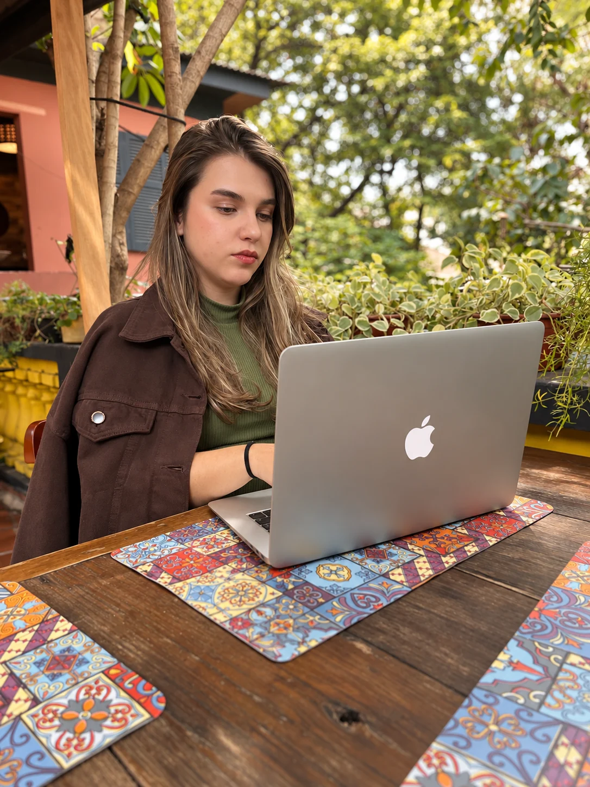

Estratégia
de marca.
Para definir o lugar que sua marca quer ocupar e as escolhas que sustentam sua comunicação.
- Posicionamento e essência
- Expressão visual e verbal
- Estratégia de comunicação
Estratégia de marca, conteúdo e direção criativa
Defino o que sua marca precisa dizer e transformo esse posicionamento em conteúdo, campanhas e direção criativa.
30+marcas e perfis
em projetos desde 2024
Do posicionamento à expressão, um trabalho pensado para o momento da sua marca pessoal ou empresa.
Para definir o lugar que sua marca quer ocupar e as escolhas que sustentam sua comunicação.
Para levar o posicionamento ao dia a dia com planejamento, roteiros e conteúdo que faça sentido para seu público.
Para dar conceito e unidade a campanhas e lançamentos, das imagens aos vídeos e materiais.
Projetos diferentes, com decisões próprias. Conheça minha participação e o que foi entregue ou observado em cada um.

bahariDireção criativa do lançamento da Bahari, marca de biquínis de Bia França, em dupla com Larissa Gomes.
411 milvisualizações em uma publicação
do lançamento
Estratégia de comunicação para a data, aproximando o conteúdo dos objetivos do negócio. A cliente relatou recompra e novos compradores entre os seguidores.
De R$ 10 mil para R$ 30 mil em 2024, segundo o relato da cliente sobre a Páscoa anterior e a campanha trabalhada.

Integrei a equipe multidisciplinar de comunicação na pré-campanha e na campanha de 2026, participando da estratégia, dos roteiros e da gestão das redes.
Mais de 100 vídeos em 45 dias, conteúdos próximos de 200 mil visualizações e crescimento de cerca de 27% na base de seguidores durante a campanha, conforme os resultados relatados por Julia no perfil profissional.
Estratégia de conteúdo e lançamento de curso digital para a psicanalista Bruna Mariana, com pautas conectadas à sua atuação e linguagem.
Conteúdos com até 3,4 mil curtidas e 1 mil salvamentos. Os indicadores são de interação com as publicações.

Criação do conceito “Da questão à nota” e da apresentação comercial para uma empresa de gestão de avaliações escolares.
Entrega: uma narrativa que organiza o problema, a proposta e o funcionamento do serviço para a conversa com escolas.

Criação de peças para o Instagram da 1ª Copa das Seleções: Vozes da Amazônia, realizada em São Luís, como integrante da equipe de design.
O resultado apresentado é a entrega de design. As instituições apoiadoras do evento não são apresentadas como clientes diretas de Julia.
Indicadores de projetos específicos, com os períodos e atribuições descritos em cada case.
Conversar sobre meu projetoO posicionamento aparece em materiais que orientam a comunicação. Aqui, você pode explorar entregas de projetos reais.
Negócio, posicionamento e comunicação para uma consultora de branding e estilo.
Alinhamento visual do book: Larissa Gomes.
O trabalho começa pela escuta e se desenvolve a partir do desafio da sua marca.
Conversamos sobre o negócio, o momento da marca e o que você quer desenvolver.
Organizamos o caminho em uma proposta com escopo, entregas e cronograma.
Pesquisa, estratégia e criação se encontram nos materiais do seu projeto.
Apresentamos as decisões e as entregas que vão orientar os próximos passos.

Sou estrategista de marca e conteúdo, com atuação em direção criativa. O teatro me deu escuta, leitura de público e atenção ao que precisa ser dito.
Levo esse olhar para o posicionamento, os roteiros e a direção dos projetos que conduzo. Desde 2024, desenvolvi trabalhos para mais de 30 marcas e perfis.
“Pra mim não foi apenas uma mudança de id visual ou de conteúdo, foi como me reconhecer de novo e me colocar pra jogo de verdade!”
“Além da recompra de clientes de anos anteriores, conseguimos converter muitas pessoas que já me conheciam, mas nunca tinham comprado.”
Algumas respostas para você entender como podemos trabalhar juntos.
Tirar uma dúvidaO ponto de partida é o desafio da sua marca. Na conversa, definimos quais frentes fazem sentido e organizamos o escopo na proposta. Para esta apresentação, consideramos contratações por projeto; o formato comercial será validado com Julia.
Sim. Podemos conversar sobre posicionamento, conteúdo ou uma campanha. Ter uma identidade visual é uma parte do contexto; a proposta considera o que sua marca precisa desenvolver agora.
Julia atua de forma remota. Projetos que envolvam captação, ensaio ou presença em campo têm a logística definida na proposta.
O cronograma depende do escopo e dos materiais envolvidos. Para visualizar uma contratação nesta demonstração, podemos considerar de 4 a 6 semanas para um projeto de estratégia. Estimativa ilustrativa, sujeita à validação.
A proposta é construída a partir do objetivo, do escopo e das entregas. A primeira conversa ajuda a entender o projeto e o que precisa estar contemplado.
Você conta um pouco sobre sua marca e o que quer desenvolver. A partir desse contexto, organizamos os próximos passos para avaliar o projeto e preparar uma proposta.
Me conte o momento da sua marca e o que você quer desenvolver. Vamos conversar sobre o caminho que faz sentido para o seu projeto.
Conversar sobre meu projeto